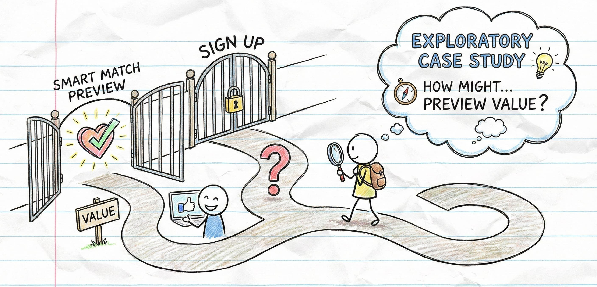

✨ Exploratory Case Study
Exploring a Smart Match Preview Experience
How might first-time jobseekers experience the value of Smart Match before signing up? 🤔

How might first-time jobseekers experience the value of Smart Match before signing up? 🤔
As a jobseeker navigating multiple hiring platforms, I wanted to explore how Employment Hero's Smart Match feature might feel to someone encountering it for the first time.
This case study explores how a lightweight preview could help jobseekers understand value, form trust, and decide whether to engage further.
Jobseekers are often asked to sign up before understanding what they'll get. This creates friction, hesitation, and early drop-off—especially when the benefit isn't clear.
Smart Match is powerful, but its value may not be immediately obvious to someone new to the platform.
...allow first-time jobseekers to experience the value of Smart Match before committing to account creation, while maintaining trust, fairness, and clarity?
Help people understand what they're signing up for
Give enough info to decide, not overwhelm
They're already stressed—don't add to it
A conceptual experience where jobseekers can see a high-level preview of how Smart Match works—before creating an account.
Try before you commit
What is and isn't being assessed
Understanding over optimisation
The preview is about confidence, not outcomes.
Any exploration in this space needs to carefully account for real human concerns:
Explicitly acknowledging these constraints is essential to maintaining trust.
Before expanding this concept, I'd want to understand:
Finding the real friction points
Understanding concerns before sign-up
Confidence vs. anxiety
Start with empathy, acknowledge uncertainty, resist the urge to over-engineer before understanding the problem space.
Read the full report 📄